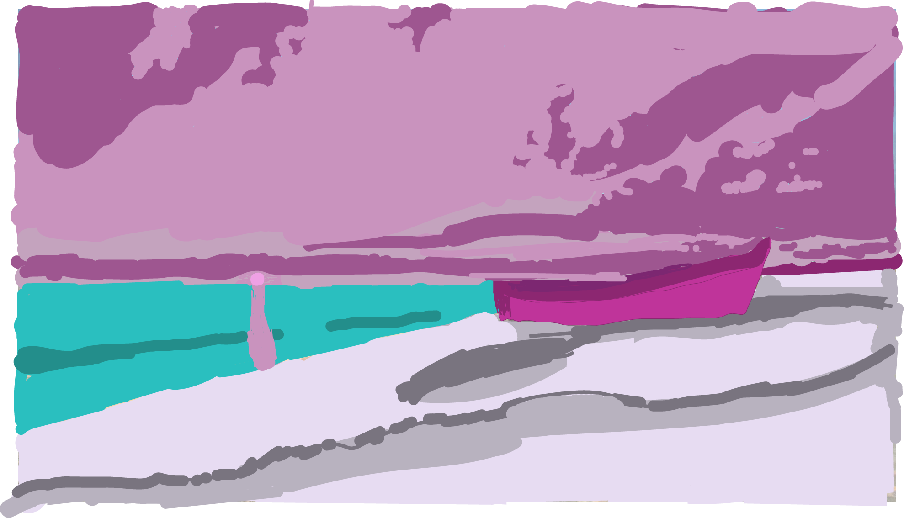
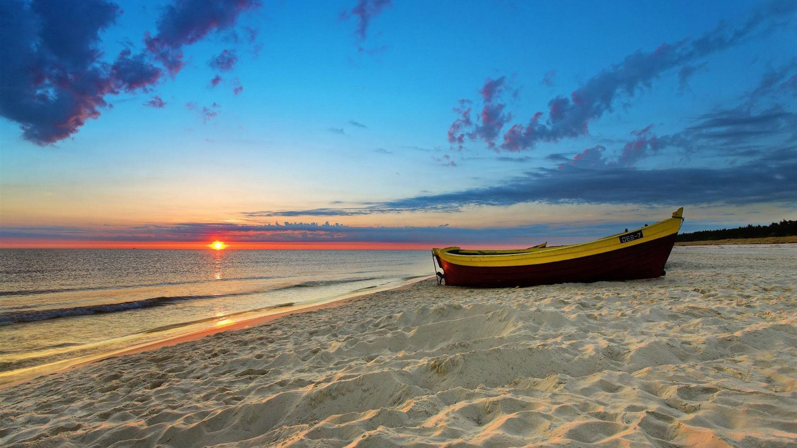

Illustrated" |

Original |
For this image the plan was to make the beach into a vaperwave scape with the use of the colors blue, pink and purple. I wanted to capture the sun going through the clouds and thought the lighter pink was a good representation of the sunset sky.
Then I had to make sure that the shadows of the sand and the boat were seen so i used a dark grey to give the Depth the sand and the shadow that follows.
The ocean I went with a teal blue and a darker version of it to represent the waves coming in.
The harder part of it all was deciding what parts of the sky were clouds or were just dark parts of the sky when the tracer showed the lines I kept losing track of the locations of the clouds.
My goal was to give a sunset vibe but with a softer filter on it.